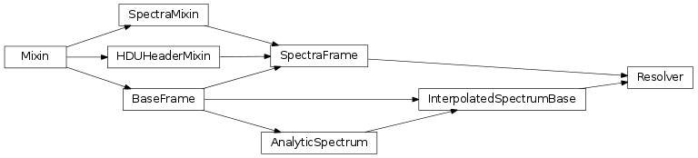

Objects for manipulating and managing spectra which are inherently analytic (i.e. you want interpolation, or your spectrum to be defined by a single function). The classes provided in this module are FRAMES not OBJECTS, i.e. they are individual representations of spectra etc.
It is possible to create an anaspecObject to hold many spectra. However, such an object might be of limited utility, as it could not be used to write or read data saved in FITS files, as the FITS format is not conducive to storing analytic items.
Note
This is a solvable problem. I could use FITS header information to store the required values for an analytic spectrum, and then simply store empty images. However, I don’t need this capability now, so maybe in a future version.
This module contains a few pre-defined analytic spectra which you can use as examples. See the anaspecobjects module.
This module provides basic analytic spectrum capabilites. There is a simple principle at work in this module: Do all calculations as late as possible. As such, most spectra will be defined as basic analytic spectra. However, the use of the CompositeSpectra class allows spectra to be used in mathematics:
A = AnalyticSpectrum()
B = AnaltyicSpectrum()
C = A + B * 20
Note
I believe that STSCI Python has some spectrum capabilities, and I am researching combining this module to provide adaptors for the STSCI implementation.
This module is built on a foundation of Analytic and semi-Analytic spectra. Analytic spectra are spectra that can be described purely as functions. They are known quantities, and show none of the features of a discritized, measured spectrum. The AnalyticSpectrum class provides an abstract base for this type of spectra. The CompositeSpectra manages the mathematical operations that can be performed on any AnalyticSpectrum.
The base.AnalyticMixin is a mixin which provides for using data frames as analytic objects with no data access attributes.
The InterpolatedSpectrum provides a spectrum which is entered as raw data (like a spectra.SpectraFrame) and then returned, using a transformation function, as a different, discrite spectrum. The methods for this transformation are defined in InterpolatedSpectrumBase. The SpectraMixin provides the properties and plotting methods used by spectra which have discrete raw data.
UnitarySpectrum is used to perform a single interpolation operation on a spectrum, when that spectrum is called. As it operates when the spectrum is called, it does not contain accessible raw data, and so is “analytic” in some sense.
Resolver is used to perform a single interpolation on a spectrum immediately. As such, it is a full-class spectrum like an InterpolatedSpectrum.
The FlatSpectrum, GaussianSpectrum, and BlackBodySpectrum objects are all analytic spectra with a specific functional implementation (as thier names imply).
A functional spectrum object for spectrum generation. This is an abstract class which implements spectrum arithmetic. Spectrum arithmetic has a delayed implementation, whereby it is applied to the spectrum only once the spectrum is called for data, allowing spectra to produce data which matches the requested wavelengths (and resolution, if applicable).
The Analytic spectrum can be provided with a set of wavelengths upon intialization. The wavelengths keyword will be stored and used when this spectrum is later called by the system. The units keyword is currently unused.
Binary composition of two functional spectra. This object should not be initialized by the user. Instead, this class is returned when you combine two spectra of different types, or combine a spectra with any other type. As such, do not initialze composite spectra idependently. See the __call__() function for documentation of how to use this type of object.
Calls the composite function components. The keyword arguments are passed on to calls to spectra contained within this composite spectra. All spectra varieties should accept arbitrary keywords, so this argument is used to pass keywords to spectra which require specific alternatives. Pass in wavelengths to use the given wavelengths. If none are passed in, it will look for object-level saved wavelengths, which you can specify simply by setting the self._wavelengths parameter on the object.
The name for this frame, an immutable property.
Return a re-labeled copy of this object.
Retruns a Header-Data Unit PyFits object. The abstract case generates empty HDUs, which contain no data.
| Parameters: | primary (bool) – Return a primary HDU |
|---|---|
| Returns: | pyfits.primaryHDU or pyfits.ImageHDU |
Whether this object is valid.
These objects expand the concept of an analytic spectrum to be any spectrum which can respond to calls with arbitrary wavelength boundaries. The spectra in the InterpolatedSpectrum class rely on a number of potential methods to calculate the desired wavelength values. The public methods for this class are generally the accepted potential resolution methods.
An analytic representation of a generic, specified spectrum. The spectrum provided will be used to create an infintiely dense interpolation function. This function can then be used to call the spectrum at any wavelength. The interpolation used by default is a simple 1d interpolation.
Passing the name of any member function in this class to the method parameter will change the interpolation/method used for this spectrum.
Calls this interpolated spectrum over certain wavelengths. The method parameter will default to the one set for the object, and controls the method used to interpret this spectrum. Available methods include all members of InterpolatedSpectrum which provide return values (all those documented below).
Sanity checks performed before any specturm operation. oldwl and oldfl are the given wavelengths and flux for the spectrum. newwl and newrs are the requested wavelengths and resolution (respectively) for the spectrum. extrapolate allows the new wavelengths to extraopolate from the old ones. If not, only operations that appear to interpolate will be allowed. upsample allows the operation to get more resolution information than is already present in the spectrum. warning and debug flip those flags prematurely, to force warning or debug output. error should be an error class to be raised by the sanity checks. These keywords allow custom sanity checks to be performed before calling this function. The benefit of this system, is that sanity checks are all run on every operation, allowing the user to examine all of the potenital problems simultaneously, rather than one at a time, as each successive check is run. The arbitrary keywords at the end allow the user to feed a dictionary of array names and arrays to be included in the sanity check output in the case of failure.
Checks include:
Sanity checks performed before any specturm operation. oldwl and oldfl are the given wavelengths and flux for the spectrum. newwl and newfl are the found wavelengths and flux (respectively) for the spectrum. newrs is the requested resolution. extrapolate allows the new wavelengths to extraopolate from the old ones. If not, only operations that appear to interpolate will be allowed. upsample allows the operation to get more resolution information than is already present in the spectrum. warning and debug flip those flags prematurely, to force warning or debug output. error should be an error class to be raised by the sanity checks. These keywords allow custom sanity checks to be performed before calling this function. The benefit of this system, is that sanity checks are all run on every operation, allowing the user to examine all of the potenital problems simultaneously, rather than one at a time, as each successive check is run. The arbitrary keywords at the end allow the user to feed a dictionary of array names and arrays to be included in the sanity check output in the case of failure.
Checks performed are:
Return a re-labeled copy of this object.
x-axis logarithmix spacing.
x-axis spacing (usually wavelengths, but could be energy etc.)
Accessor to get the flux from this spectrum
Retruns a Header-Data Unit PyFits object. The abstract case generates empty HDUs, which contain no data.
| Parameters: | primary (bool) – Return a primary HDU |
|---|---|
| Returns: | pyfits.primaryHDU or pyfits.ImageHDU |
Calls the default integrator.
Performs an integration along wavelengths using the trapezoidal approximation.
The integrator uses a trapezoidal approximation, upscaled to include more data points in each trapezoidal section than the requested wavelengths. The integrator then uses the trapezoid approximation from http://en.wikipedia.org/wiki/Trapezoidal_rule to integrate the spectrum. This results in some integration error, but the integration error is presumably small when compared to the speedup gained over integrate_quad().
Input should be a set of wavelengths requested for the system (in the wavelengths keyword). The output will be a data array of wavelengths and fluxes (should be the provided wavelengths, and an equivalently shaped array with fluxes.) The upscale keyword controls the degree of oversampling for this method.
This calculation is based on the interpolate() function and the np.histogram() function, both of which are not quite vector-fast, but are sufficiently fast for most purposes. This method has been tested to be much faster than integrate_quad()
Performs an integration along wavelengths using the scipy QUADpack implementation in scipy.integrate.quad().
Input should be a set of wavelengths requested for the system (in the wavelengths keyword). The output will be a data array of wavelengths and fluxes (should be the provided wavelengths, and an equivalently shaped array with fluxes.)
This integrator uses a generator based for-loop wraped around a call to scipy.integrate.quad(). On an operation with ~100 elements, this operation can consume close to 20s of computation time. Also, this method must stay strictly within the provided wavelength data. The intSteps keyword controls the maximum number of steps in each integration. Turning this value down speeds up the integrator.
Uses a 1d Interpolation to fill in missing spectrum values.
This interpolator uses the scipy.interpolate.interp1d method to interpolate between data points in the original spectrum. Normally, this method will not allow extrapolation. The keywords extrapolate and fill_value can be used to trigger extrapolation away from the interpolated values.
Input should be a set of wavelengths requested for the system (in the wavelengths keyword). These wavelengths should not exceed the bounds of the given wavelengths for this spectrum (doing so doesn’t really make sense for interpolation. See polyfit() for a case where this might make sense.). The output will be a data array of wavelengths and fluxes (should be the provided wavelengths, and an equivalently shaped array with fluxes.)
Warning
This method does not prevent you from interpolating your spectrum into a higher resolution state. As such, it is possible, when calling interpolate, to increase the resolution of the spectrum, and end up ‘creating’ information.
The name for this frame, an immutable property.
Linearize this spectrum
Apply a logarithmic scale to this spectrum
Uses a 1d fit to find missing spectrum values.
This method will extrapolate away from the provided data. The function used is a np.poly1d() using an order 2 np.polyfit. By default, this method will allow extrapolation away from the provided wavelengths. The order keyword can be used to adjust the polynomial order for this funciton.
Input should be a set of wavelengths requested for the system (in the wavelengths keyword). The output will be a data array of wavelengths and fluxes (should be the provided wavelengths, and an equivalently shaped array with fluxes.)
Resample the given spectrum to a different resolution.
Normally, spectra are resolution limited in their sampling. If you want to sample a spectrum at a lower resolution, simply interpolating, or drawing nearest points to your desired wavelength may cause information loss. The resample method convolves the spectrum with a gaussian which has a width appropriate to your desired resolution. This re-distributes the information in the spectrum into neighboring points, preventing the loss of features due to interpolation and sampling errors.
The resample spectrum normally does not allow you to up-sample a spectrum to a higher resolution, as this could lead to errors caused by ‘information creation’, i.e. your spectrum will appear to show more detail than is possible. Hoever, the system will allow upsampling (useful if you are confident that you will later downsample your spectrum) using the upsample keyword.
Input should be a set of wavelengths requested for the system (in the wavelengths keyword) and an array of resolutions requested in the resolutions keyword. The output will be a data array of wavelengths and fluxes (should be the provided wavelengths, and an equivalently shaped array with fluxes.)
Note
If you request more detail than is given in the spectrum, or if you extrapolate on the spectrum, you may encounter parts of the new spectrum that have no data. As the fluxes are normalized, such data segments are set to zero. This will also produce a warning.
This is a vector-based calculation, and so should be relatively fast. This function contains ZERO for loops, and uses entirely numpy-based vector mathematics.
Spectral resolution
This method calls a spectrum method, saving and returning the result. The saved data is prepared for the resolve_and_integrate() function before being returned. The method also prevents over-resolution sampling.
The resolution provided (resolution keyword) are used to request a resampled resolution. However, to prevent information loss, by default (see the upscaling keyword) the method automatically prevents the new resolution from exceeding the inherent resolution of the provided data. This allows the system to request a high resolution spectrum, and instead receive the maximum amount of information available at every point.
Resolve a spectrum at a given resolution once, and use that resolved resolution for integration in the future.
The spectrum is first resolved by the resolve() function. This provides an appropriately resampled spectrum for use with the integrator. The integrator is then called, and used to get a result. The data from the resolve() function is saved for future use.
Input should be a set of wavelengths requested for the system (in the wavelengths keyword) and an array of resolutions requested in the resolutions keyword. The output will be a data array of wavelengths and fluxes (should be the provided wavelengths, and an equivalently shaped array with fluxes.)
Note
The speedup advantage of this method is only beneficial for large data arrays, where the resample() function is slow. However, it also allows the use of resample and integrate simultaneously. As such, there is essentially no downside to using this method over a UnitarySpectrum call to insert another interpolation method.
Whether this object is valid.
Accessor to get the wavelengths from this spectrum
Whether the x-axis is approximately linear
Whether the x-axis is approximately logarithmic
This spectrum performs a unitary operation on any InterpolatedSpectrum-type-object. The operation (specified by the method keyword) is performed after the contained spectrum is called. The included spectrum is called immediately and then discarded. As such, wavelength and resolution keywords should be provided when appropriate to resolve the spectrum immediately. This operation does not save the old data state. All methods in InterpolatedSpectrum are available.

Calls this interpolated spectrum over certain wavelengths. The method parameter will default to the one set for the object, and controls the method used to interpret this spectrum. Available methods include all members of InterpolatedSpectrum which provide return values (all those documented below).
This spectrum performs a unitary operation on any InterpolatedSpectrum-type-object. The operation (specified by the method keyword) is performed after the contained spectrum is called. All methods in InterpolatedSpectrum are available.
Calls this interpolated spectrum over certain wavelengths. The method parameter will default to the one set for the object, and controls the method used to interpret this spectrum. The old_method parameter will be used on the contained spectrum. Available methods include all members of InterpolatedSpectrum which provide return values (all those documented below).
These objects actually have spectral functions included.
An analytic representation of a Blackbody Spectrum at a Kelvin Tempertaure.
| Parameters: | temperature (float) – The temperature, in Kelvin, of this black body curve. |
|---|
Calls this blackbody spectrum over certain wavelengths
The name for this frame, an immutable property.
Return a re-labeled copy of this object.
Retruns a Header-Data Unit PyFits object. The abstract case generates empty HDUs, which contain no data.
| Parameters: | primary (bool) – Return a primary HDU |
|---|---|
| Returns: | pyfits.primaryHDU or pyfits.ImageHDU |
Whether this object is valid.
An analytic representation of a gaussian function in spectral form.
| Parameters: |
|
|---|
Calls this gaussian spectrum over certain wavelengths
The name for this frame, an immutable property.
Return a re-labeled copy of this object.
Retruns a Header-Data Unit PyFits object. The abstract case generates empty HDUs, which contain no data.
| Parameters: | primary (bool) – Return a primary HDU |
|---|---|
| Returns: | pyfits.primaryHDU or pyfits.ImageHDU |
Whether this object is valid.
An analytc form of a flat value at every wavelength.
| Parameters: | value (float) – The height of this flat spectrum, in flux units. |
|---|
Calls a flat spectrum over given wavelengths
The name for this frame, an immutable property.
Return a re-labeled copy of this object.
Retruns a Header-Data Unit PyFits object. The abstract case generates empty HDUs, which contain no data.
| Parameters: | primary (bool) – Return a primary HDU |
|---|---|
| Returns: | pyfits.primaryHDU or pyfits.ImageHDU |
Whether this object is valid.